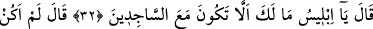
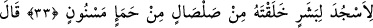
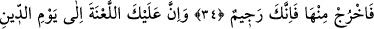
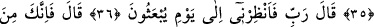
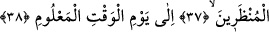
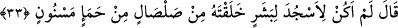
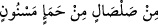

ŞEYTANIN PAZARLIĞI
32. (Allah:) “Ey İblis! Secde edenlerle berâber olmayışının sebebi nedir?” dedi.
33. (İblis:) “Ben kuru bir çamurdan, şekillenmiş kara balçıktan yarattığın bir
insana secde edecek değilim.” dedi.
34. Allah şöyle buyurdu: “Öyle ise oradan çık! Artık kovuldun!
35. Muhakkak ki kıyâmet gününe kadar lânet senin üzerine olacaktır!”
36. (İblis:) “Rabbim! Öyle ise, (varlıkların) tekrar dirileceği güne kadar bana
mühlet ver.” dedi.
37. Allah buyurdu ki: “Sen mühlet verilenlerdensin.”
38. “Allah katında bilinen vaktin gününe kadar...”
Allah: “Ey İblis!” Âdem’e “secde edenlerle berâber olmayışının sebebi nedir?”
üstelik secde edenlerin ne derece şerefli varlıklar olduğu ortada iken “dedi.” Bu ifâde,
‘Peki, Cenab-ı Hak o secde etmeyince ne dedi?’ şeklindeki mukadder bir soruya cevap
teşkil eden yeni bir cümledir. Bu azarlama şeytanın sâdece secde edenlerden ayrı
durmasından ötürü olmayıp bilâkis mezkûr üç mâsıyetinden ötürüdür.
33. İblis: “Ben kuru bir çamurdan, şekillenmiş kara balçıktan yarattığın bir insana
secde edecek değilim.” dedi.
İblis: “Ben” rûhânî bir cevher olduğum halde “kuru bir çamurdan,” yâni kesif bir
cisimden “şekillenmiş kara balçıktan” siyah ve kokmuş balçıktan “yarattığın bir
insana secde edecek değilim.” dedi.” Bu cümle de açıklama için getirilmiş yeni bir
cümledir.
“__WORD__ ifâdesinin tefsiri yukarıda geçti. Şeytan şöyle demek istiyor: